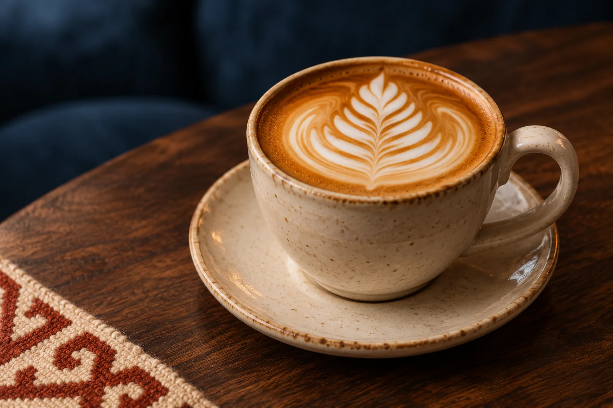

Румяная выпечка
Для неспешного перекуса и больших планов.
ТВОЯ КОФЕЙНЯ В ЖЕЗКАЗГАНЕ
Заходи за любимым напитком. Оставайся ради тёплых разговоров и маленьких радостей.

ИДЕАЛЬНАЯ ПАРА К НАПИТКУ
Для неспешного перекуса и больших планов.
Десерт — всегда хорошая идея.
Бургеры, салаты и другие поводы заглянуть.
Изображения иллюстративные. Ассортимент и цены уточняйте у бариста.
НЕ ПРОСТО КОФЕЙНЯ
Мягкое кресло, тёплый свет и чашка в ладонях. Встретиться с друзьями, побыть наедине с мыслями или просто сделать паузу посреди дня.
Жайлы. Жылы. Өзіңше.
ДО ВСТРЕЧИ В ÖZIÑŞE
У нас для тебя всегда найдётся повод
остаться ещё немного.
Утром, днём и когда весь город уже спит.